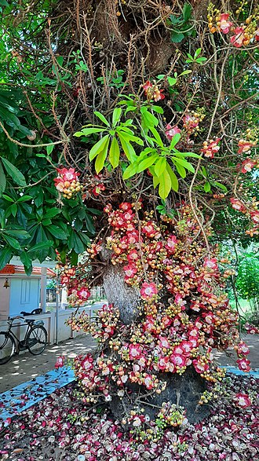
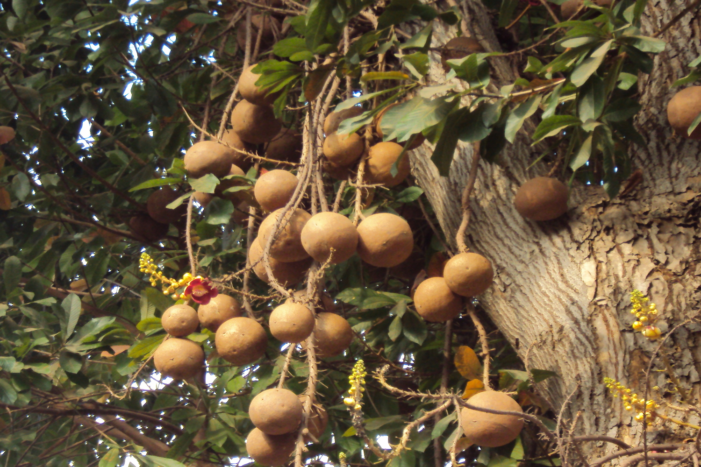
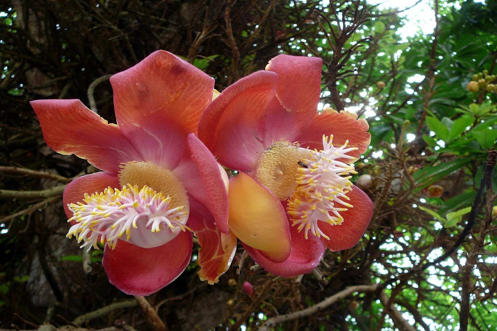
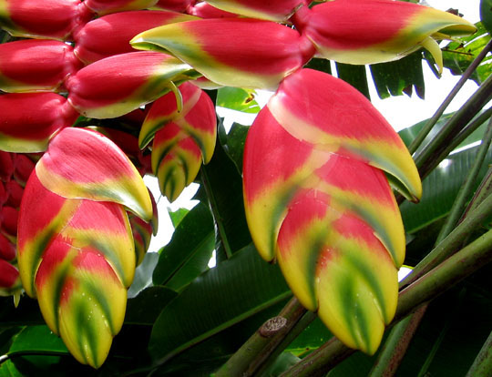
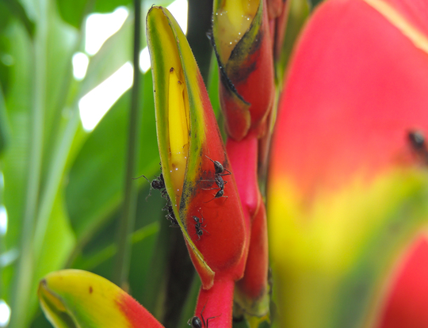
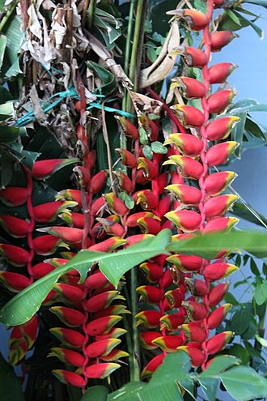
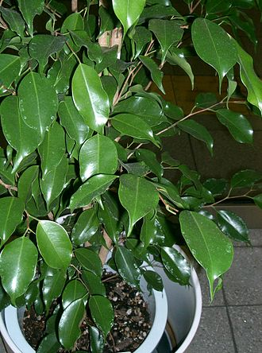
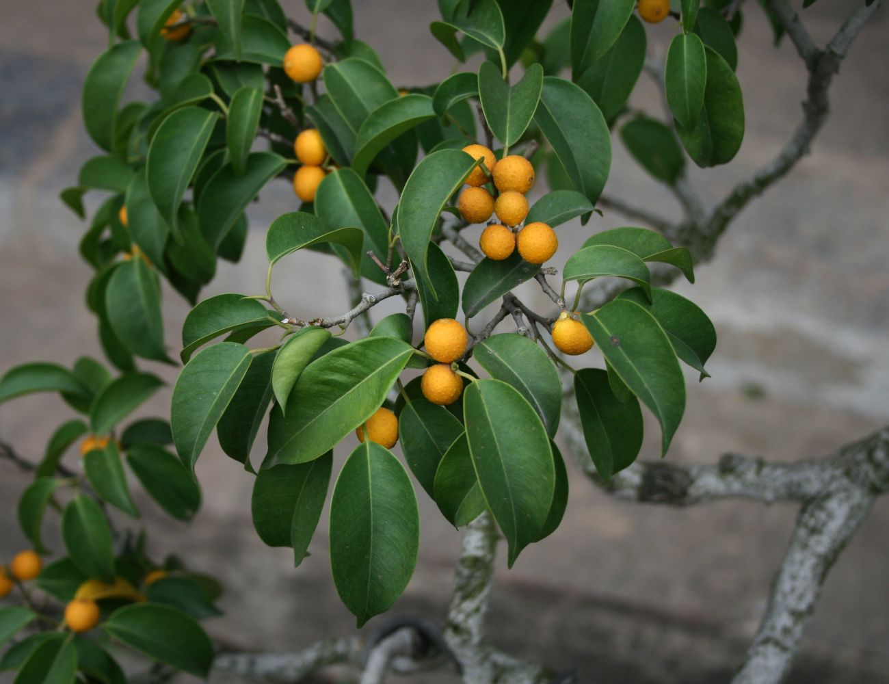
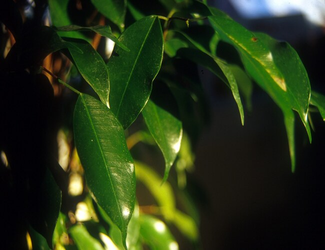

| Scientific Name | Common Names | Family Name | Description | Gallery |
|---|---|---|---|---|
| Couroupita guianensis | Cannonball tree | Lecythidaceae |
|



|
| Heliconia rostrata | Hanging Lobster Claw or False Bird Of Paradise | Heliconiaceae |
|



|
| Ficus benjamina | Weeping Fig, Benjamin Fig or Ficus Tree | Moraceae |
|



|
| Source: Wikipedia. (2021). National Zoological Gardens of Sri Lanka. [online] Available at: https://en.wikipedia.org/wiki/National_Zoological_Gardens_of_Sri_Lanka | ||||